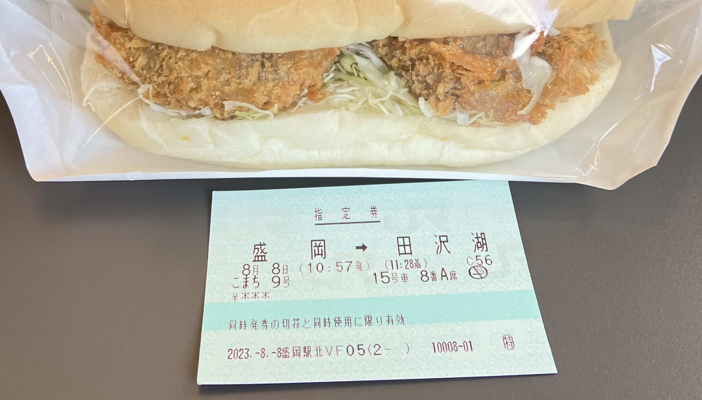
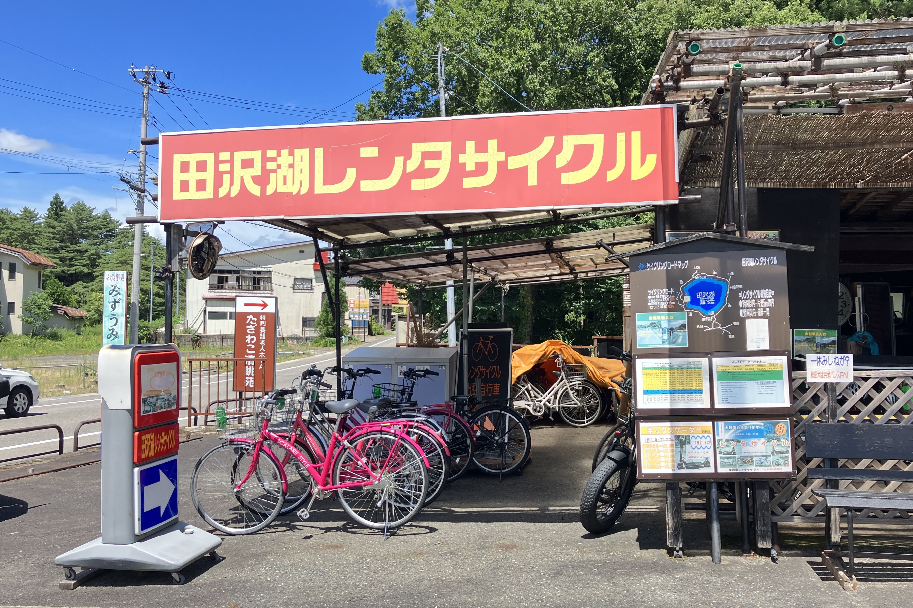
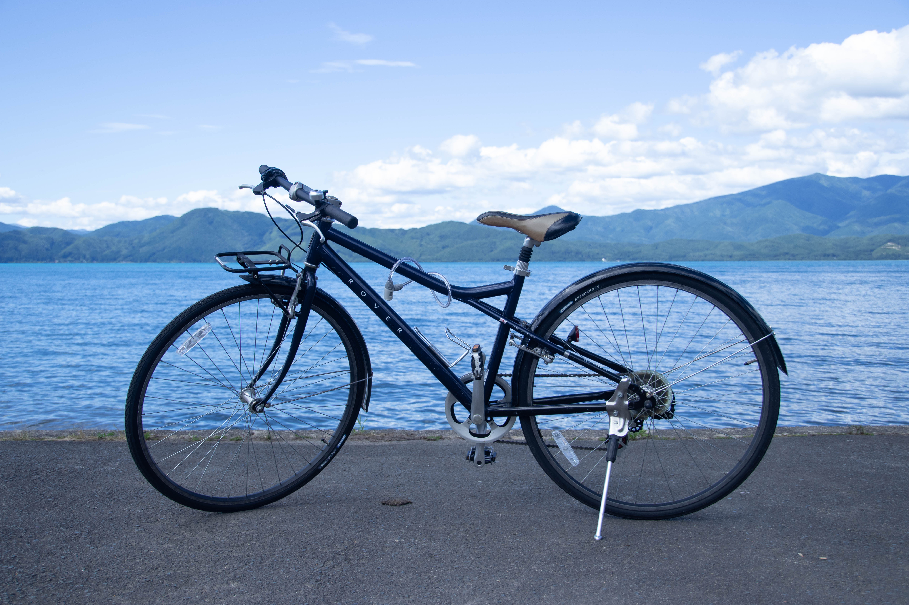
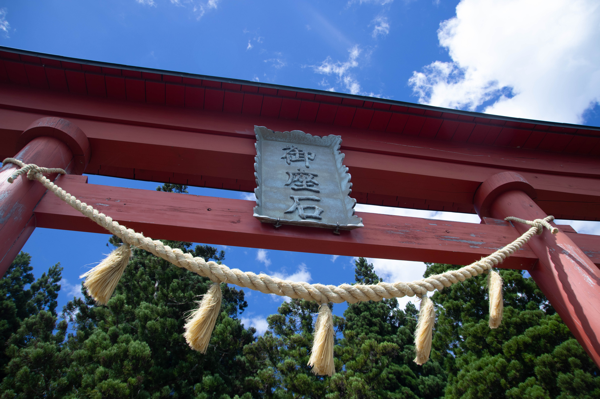
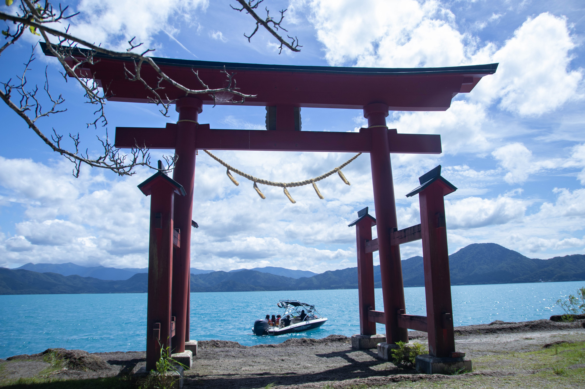

田澤湖
田澤湖位於日本秋田縣仙北市,是日本最深的湖泊,隨著四季與晨昏的變化,清澈的湖水會展現出不同的風貌。除了景色優美,田澤湖周圍還有許多與當地「辰子傳說」習習相關的景點,尤其是「御座石神社」、「浮木神社」與「辰子像」(內容參考自旅東北)。另外,田澤湖於1987年與高雄的澄清湖締結為姊妹湖,2023、2024這兩年仙北市長都有來台灣造訪澄清湖風景區!
交通方式
| 起訖 | 路線 | 備註 |
|---|---|---|
| JR盛岡 → JR田澤湖 | 新幹線 | JR Pass 東日本鐵路周遊券(東北地區) |
| JR田澤湖 → 田澤湖畔 | 計程車 | 沒做功課,錯過巴士接駁時間🥲 |

環湖紀錄
田澤湖的周長有20km,蠻多人會選擇搭乘巴士來環湖,但我還是喜歡騎自行車!



